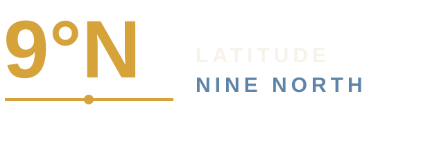

VORBEREITEN
Planung wird sichtbar
Fahrzeug, Ausrüstung, Training, Route und Notfallplanung werden als Teil der Expedition dokumentiert.
Die Reise beginnt lange vor dem ersten Kilometer. Beyond the Map dokumentiert den Weg von fundierter Vorbereitung über Expedition Risk Management bis zum langfristigen Projekt Latitude Nine North.

Beyond the Map ist kein klassischer Reiseblog. Es ist eine Plattform für Expedition, Wissen und persönliche Entwicklung – mit Fokus auf Vorbereitung, Systeme, Risiko, Mobilität und das, was auf dem Weg wirklich trägt.
Fahrzeug, Ausrüstung, Training, Route und Notfallplanung werden als Teil der Expedition dokumentiert.
Mobilität, Risiko, Logistik und Human Factors werden als zusammenhängendes System betrachtet.
Erfahrungen und Lessons Learned werden zu Artikeln, Checklisten, späteren Audits und praxisnaher Beratung.
Latitude Nine North ist das langfristige Expeditionsprojekt innerhalb von Beyond the Map. Die Panamericana liefert den Weg, Panama den geografischen Horizont – die Vorbereitung liefert die Substanz.
Expedition Risk Management bildet die fachliche Achse der Plattform: operative Planung, Mobilität, Logistik, technische Systeme und menschliche Faktoren – pragmatisch statt theoretisch.
Bedrohungen, Exposition, Folgen und angemessene Gegenmaßnahmen.
Fahrzeugfähigkeit, Grenzen, Recovery, Wartung und Redundanz.
Beladung, Versorgung, Dokumente, Ersatzteile und Kommunikation.
Entscheidungsverhalten, Ermüdung, Routine, Fähigkeiten, Kommunikation und Anpassungsfähigkeit.
Grenzen, Gelände, Infrastruktur, Saison und Ausweichoptionen.
Ausfallbilder, Recovery, Kommunikation und Evakuierungslogik.
Strukturierte Prüfung von Systemen, Verfahren und Schwachstellen.
Erfahrung systematisch in bessere Entscheidungen überführen.
The Logbook wird die Publishing-Ebene von Beyond the Map – persönlich genug, um menschlich zu bleiben, strukturiert genug, um dauerhaft nützlich zu sein.
Persönliche Notizen über Entscheidungen, Training, Testreisen, Ausrüstung und Orte.
Vertiefende Beiträge zu Planung, Systemen, Fahrzeugfähigkeit, Logistik und Risikoreduktion.
Panamericana, Fahrzeugentwicklung, Recherche und der Übergang vom Projekt zur Expedition.